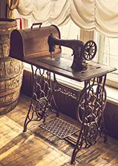
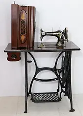
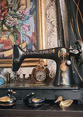
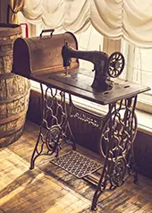
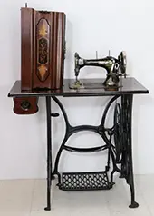
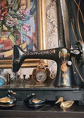

Diese alten Nähmaschinen sind mehr als nur Werkzeuge, welche Zeugnisse vergangener Handwerkskunst und Designgeschichte sind. Robust verarbeitet, mit liebevollen Details und teilweise verzierten Gehäusen, erzählen sie von Generationen, die mit ihnen kreativ gearbeitet haben.
Ob als dekoratives Sammlerstück, stillvolles Einrichtungsobjekt oder funktionale Nähmaschine. Die antiken Nähmaschinen bringen Nostalgie, Charakter und einen Hauch Industriecharme in jedes Zuhause.
Bei uns ist jedes Stück ein Unikat und gibt es deswegen nur einmal. Dennoch haben wir im Moment eine Auswahl von vier Nähmaschinen bei uns im Laden, da sich die Auswahl aber ständig verändern kann, bitten wir euch, immer wieder vorbeizuschauen